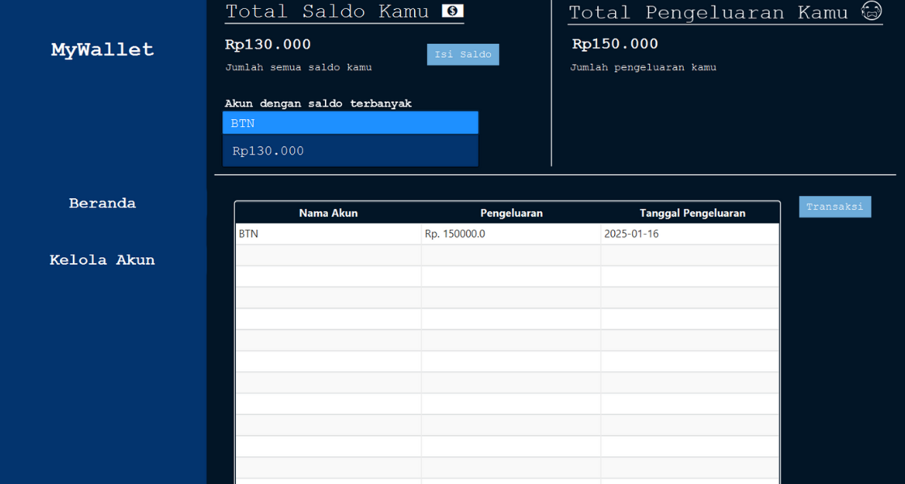
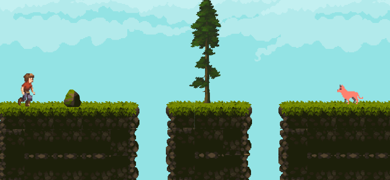

I am a Informatics student at Jenderal Achmad Yani University (UNJANI) with a high passion for software engineering, especially in the field of Full-Stack Development and Machine Learning. I have a strong foundation on the backend side with experience using PHP, Java, and Python in a variety of academic and independent projects. To complete my skills towards full-stack, I am currently actively exploring JavaScript (Node.js) for modern backend development. I manifest my initiative and problem-solving skills through projects such as building financial management applications and developing 2D games from scratch using Java. I am looking for an internship opportunity as a Backend Developer or Frontend Developer, where I can make a real contribution to the project while learning directly from senior developers. Let's connect to discuss further!
Education
I am now active as an active student in the 5th semester at Unjani, majoring in undergraduate informatics
Experience
Assistant Lecturer in Computer Organization & Architecture Jenderal Achmad Yani University
- Assist lecturers in facilitating teaching and learning activities for Computer Organization & Architecture courses.
- Deliver lecture material and lead weekly practical sessions for 30 students.
- Provide guidance and assistance to students in understanding core concepts such as instruction set architecture (ISA), pipelines, and memory hierarchies.
- Assist in the preparation, distribution, and grading of assignments and quizzes to ensure student understanding of the material.
Projects
this is my personal project

Java-based financial management application with javafx.

Java-based endless run game with LibGDX framework